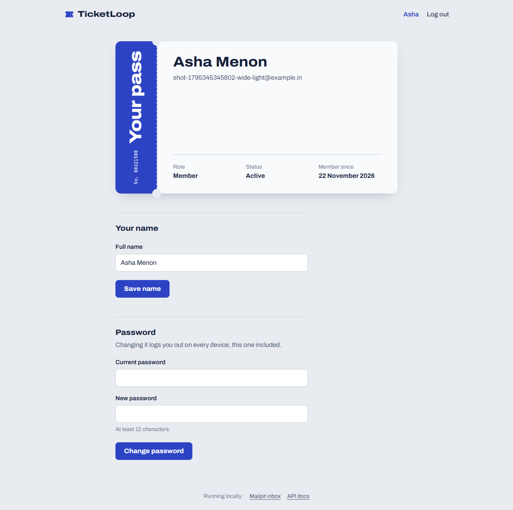

The 30-second answer
Login gives two tokens. The access token is a JWT that lives 15 minutes; any API process can check its signature without the database. The refresh token is 32 random bytes, and the database keeps only its SHA-256. Every refresh revokes the token it used and issues a new one in the same family.
If a revoked refresh token comes back, two parties hold tokens from one login, and I cannot tell which is the thief. So I revoke the whole family and both have to log in again. The swap is one conditional UPDATE, so two refreshes of the same token at the same instant have exactly one winner. A test fires 20 such pairs at once.
In the browser the access token lives in memory and the refresh token in an HttpOnly cookie that page scripts cannot read, so an injected script cannot carry a week-long token away. Every module from here on ships its screens, so I can try each feature by hand the day it lands.
What I built
- Security helpersArgon2id hashing (64 MiB, 3 passes, 4 lanes), HS256 access tokens with
sub,iss,iat,expandjti, and opaque tokens stored as SHA-256. Pure functions, no database.app/core/security.py - Auth settings
JWT_SECRET_KEYas a SecretStr of at least 32 bytes; staging and production refuse the built-in development key. Token lifetimes are settings too.app/core/config.py - Two token tables
refresh_tokens(family, revoked_at, replaced_by) andpassword_reset_tokens(used_at), in their own migration.app/modules/identity/models.pymigrations/versions/2026_11_22_… - Nine endpointsregister, login, refresh, logout, password-reset request and confirm,
GETandPATCH /users/me, andPOST /users/me/password.app/modules/identity/router.pyservice.py - Route guards
CurrentUserchecks the token, loads the user and refuses SUSPENDED accounts.AdminUseralso needsrole = ADMIN.app/modules/identity/dependencies.py - Strict request bodiesUnknown fields are a 422, so
{"role": "ADMIN"}in a sign-up is refused, not ignored. Passwords areSecret[...]and print as stars.app/core/schemas.pyapp/modules/identity/schemas.py - Email portAn
EmailSenderprotocol with two senders: SMTP to Mailpit on a laptop (inbox atlocalhost:8025), and an in-memory list in tests. Neither logs a message body, because the body holds the reset link.app/infrastructure/external_providers/email.pydocker-compose.yml - Refresh cookieLogin and refresh set
refresh_tokenas an HttpOnly, SameSite=Strict cookie on/api/v1/authand return only the access token. Logout and a password change clear it.app/modules/identity/router.py - FrontendVite, React and TypeScript in
frontend/. Types come from the backend's OpenAPI description, and CI fails if they drift. Six screens, listed below.frontend/src/scripts/export_openapi.py - Admin toolNo route grants ADMIN. An operator runs
python -m scripts.make_admin email.scripts/make_admin.py - CIThree GitHub Actions jobs. The backend: ruff, format check,
alembic check, then pytest against Postgres 17 withREQUIRE_POSTGRES=1, so a missing database fails the run instead of skipping half the tests. The frontend: format, lint, types, unit tests, build, and the API types in sync. The browser tests: Chrome against Vite, the API, Postgres and Mailpit..github/workflows/ci.yml - Tests143 backend tests, covering every 401 and 403, rotation, reuse, the cookie's attributes, logout, the reset flow and its link, a log check for passwords, SMTP against a real local server, and the refresh race. 20 frontend unit tests for the refresh rules, and 4 browser tests.
tests/frontend/src/**/*.test.tsfrontend/e2e/
Rotation, and what reuse looks like
- 1Login starts a family
The password is checked with Argon2. A new
family_idis drawn, and the refresh token R1 is saved as its SHA-256 in that family. - 2Refresh claims R1 with one UPDATE
UPDATE refresh_tokens SET revoked_at = now() WHERE token_hash = :h AND revoked_at IS NULL AND expires_at > now() RETURNING id, user_id, family_id. One row back means R1 was live and is now spent. - 3R2 is issued in the same family
R1's
replaced_bypoints at R2, so the chain can be followed. A CHECK makes sure a replaced token is always revoked. - 4R1 comes back: zero rows
The token exists but is revoked. Either the real user or a thief replayed a spent token, and both hold tokens from this family.
- 5Revoke the family, commit, then 401
Every live token in the family is revoked, R2 included. This commit happens before raising, because
get_dbrolls back on any error and would undo the revocation.
The race: one token, two refreshes at once
It is the M2 lock experiment again, on a real table. Both requests send the claim UPDATE for the same token.
A: UPDATE … WHERE token_hash = h AND revoked_at IS NULL # 1 row, row locked
B: the same UPDATE # blocks on A's row lock
A: INSERT R2, set replaced_by, COMMIT # 200 with a new pair
B: wakes, re-checks WHERE: revoked_at is set now # 0 rows
B: sees a revoked token, revokes the family (R2 too) # COMMIT, then 401- Exactly one winner, whatever the timing. The test registers 20 users, releases two refreshes together with a barrier each time, and expects
[200, 401]with no live token left. - I proved the test can fail. With
revoked_at IS NULLremoved from the claim, it got[200, 200]. It also checks that at least one pair of requests overlapped in time, so it cannot pass only because they ran one after the other. - The strict rule has a cost. A client that refreshes from two tabs at once logs itself out. Auth0 offers a short grace window for this; I chose none, as FR-01 says.
Screens
Run npm run dev in frontend/ and open localhost:5173. Each form sits on a ticket whose stub carries the page title; on a phone the stub becomes a band across the top.
- Create accountName, email, password (12 or more characters). Logs you straight in.
/register - Log inOne message, "Wrong email or password", whichever was wrong. Notices such as "You're logged out" appear here.
/login - Your passYour account as an admit-one ticket: name, email, role, status, member since. Below it, change your name and change your password.
/account - Reset passwordAsks for an email and answers the same way for every address. The link arrives in Mailpit.
/forgot-password - New passwordOpened from the emailed link. Reads the token after
#, removes it from the address bar, and says so plainly when the link is spent./reset-password - OfflineShown when the API cannot be reached, with the command that starts it.
any page

Decisions
Passwords
Argon2id at RFC 9106's low-memory profile
Instead of bcrypt, or a fast hash like SHA-256
Each guess costs an attacker 64 MiB of memory and about 50 ms, which takes away most of a GPU's advantage. bcrypt only ever uses the first 72 bytes of a password. The parameters live inside each stored hash, and a successful login re-hashes an old hash with today's settings.
Length only: 12 to 128 characters
Instead of rules like "one digit, one symbol"
OWASP's advice: length is what makes a password hard to guess, and composition rules push people to Password1!. The upper limit stops anyone making the server hash megabytes.
One answer for "no such email" and "wrong password"
Instead of telling the user which one was wrong
Login cannot be used to test which emails have accounts. For an unknown email I still run one Argon2 check against a dummy hash, so the response time does not give it away either. Suspension is only revealed after a correct password.
Tokens
A short JWT plus an opaque refresh token
Instead of server sessions, or one long-lived JWT
The access token needs no lookup to verify, but a JWT cannot be revoked, so it lives 15 minutes. The refresh token is the revocable part: it lives in a table I can update. A long-lived JWT would mean a stolen token works for days.
SHA-256 for refresh and reset tokens
Instead of storing them as they are, or hashing them with Argon2
A leaked table or backup then holds nothing usable. Argon2 is for low-entropy secrets that people choose; 256 random bits cannot be brute-forced, so a fast, unsalted hash is safe and lets me find the row through a unique index.
No role in the JWT; load the user on every request
Instead of trusting claims inside the token
FR-01 says a suspended account cannot use a token it already holds. One primary-key lookup per request makes suspension and demotion apply to the very next request, not 15 minutes later.
HS256 fixed in code
Instead of reading the algorithm from config or from the token's header
Trusting the header's alg is how "alg": "none" and key-confusion attacks work. Decoding passes algorithms=["HS256"] and requires every claim. One shared key is fine while one service both signs and verifies; RS256 would matter once others must verify without being able to sign.
The refresh token lives in an HttpOnly cookie
Instead of returning it in JSON for the page to keep in localStorage, or in memory only
A script injected into the page can read localStorage and walk away with a week of access. It cannot read an HttpOnly cookie. SameSite=Strict stops other sites from making the browser send it, which is what protects refresh and logout from cross-site forgery, and the path limits it to /api/v1/auth. Memory only would be safer still, but every reload would log you out. The token never appears in any response body; otherwise a script could fetch it and the cookie would protect nothing.
Logout ends the whole family
Instead of revoking only the token presented
With the current token the two are the same. With an older token from the session, revoking only that one would leave the live token working. Logout also locks the presented row with FOR UPDATE, so a refresh already in flight finishes first and its new token gets revoked too.
Requests and errors
The unique constraint decides "email taken"
Instead of checking for the email first
Two sign-ups can both pass a "does it exist?" query. I insert and turn uq_users_email into a 409, matched by constraint name, never by message text.
401 versus 403, with WWW-Authenticate: Bearer
Instead of one "access denied" code
401: I do not know who you are (no token, bad token, expired). 403: I know who you are and you may not (suspended, not an admin). HTTP requires every 401 to name the auth scheme.
One deliberate commit outside get_db
Instead of the rule "services never commit"
Reuse detection has to save the revocation and still answer 401. A 401 is an exception, and get_db rolls back on exceptions. I commit first, then raise, and the comment says why.
Mailpit locally, a list in tests, behind one port
Instead of logging the reset link, or sending real email
Logging tokens is banned by the NFRs. Mailpit catches every message and shows it in a web inbox, so I can click a reset link by hand; tests read an in-memory list. create_app picks the sender from settings. The link carries the token after #, which browsers never send to a server. From M11 the send moves into the outbox, after the commit.
Frontend
Each module ships its own screens
Instead of one frontend at the end
Testing a reservation countdown or a payment by hand through curl is slow and easy to get wrong. A thin slice per module means every feature is tried in a browser the day it lands; M18 becomes a polish pass. The screens hold no business rules.
Refreshes never overlap, even across tabs
Instead of letting every failed request refresh on its own
Two refreshes with one cookie look exactly like a stolen token, and the server ends the session. Inside a tab, callers share one in-flight refresh. Across tabs, a Web Lock makes each wait its turn, and the browser then sends the cookie the previous tab just received. Only a 401 of type not-authenticated triggers a refresh; a wrong current password is a 401 too.
Types generated from the backend
Instead of hand-written request and response types
npm run api:types exports FastAPI's OpenAPI description and turns it into TypeScript. A renamed field fails the type check, and CI regenerates both files and fails on any difference.
One origin through the dev server's proxy
Instead of CORS between two ports
Vite forwards /api to port 8000, so the browser sees the pages and the API as one site. No CORS setup, and the SameSite=Strict cookie is sent. Production will do the same with one reverse proxy.
Interview questions
Answer out loud first, then open.
Why can you not truly log out a JWT access token, and how do you work around it?
A JWT is valid because of its signature and its exp, and checking it needs no state, so there is nothing to delete. Revoking one would mean a deny-list that every request checks, which gives up the point of a JWT. I keep access tokens to 15 minutes and make the refresh token the thing I can revoke. Logout revokes the session's refresh tokens, so at most 15 minutes of access remain. For suspension I do look the user up on each request, which closes that gap for the one case where it matters.
Why store a hash of the refresh token instead of the token?
Anyone who reads the table, from a backup, a SQL injection or a support tool, would otherwise hold working tokens for every user. With SHA-256 they hold values they cannot turn back into tokens. It's the same reason passwords are hashed, but the token is 32 random bytes, so a fast hash is enough. Nobody can guess 2256 values, however fast each guess is. Argon2 would only slow down every refresh.
What is refresh token rotation, and what does reuse detection add?
Rotation means each refresh token works once: using it returns a new pair and revokes the old token. A stolen token then works for one refresh at most. Reuse detection covers the case where the thief uses it first. When the real user later presents the token the thief already spent, the server sees a revoked token come back. It cannot tell who is who, so it revokes every token in the family, and the thief's session dies with it.
Two requests refresh the same token at the same moment. What happens?
Both send the conditional UPDATE. The first locks the row and revokes it. The second blocks on that row lock until the first commits. Under Read Committed it then re-checks its WHERE clause against the new row version, finds revoked_at set, and updates nothing. It then sees a revoked token, so it revokes the family, including the token the first request just issued, and returns 401. One winner, and the session ends. My race test runs this 20 times with real commits.
Hashing versus encryption: which one for passwords, and why?
Hashing. Encryption can be reversed by anyone with the key, and the server would hold that key, so one breach exposes every password. A hash only lets me check a guess. It must be slow and salted: the salt gives every user a different hash for the same password, so precomputed tables are useless, and the slowness makes each guess expensive. Argon2id adds memory-hardness, which takes away most of a GPU's advantage.
A JWT is "signed, not encrypted". What does that mean in practice?
Anyone can base64-decode the header and payload and read them, so a JWT must never carry secrets. The signature only proves that we issued it and nobody changed it. Change one character of the payload and the HMAC no longer matches. That's why my token carries only a user id, an issuer, timestamps and a random jti.
Why is the login error the same for an unknown email and a wrong password?
Different messages let an attacker list which emails have accounts, and then target them with phishing or password stuffing. The same message alone is not enough. "No such user" would answer in a millisecond while "wrong password" takes about 50 ms of Argon2, so I run a dummy verification for unknown emails too. Registration still reveals a taken email with its 409, which the contract accepts. The M14 rate limits slow that probing down.
How does get_current_user work, and why is it a dependency?
It reads Authorization: Bearer through FastAPI's HTTPBearer, decodes the JWT with HS256 and my issuer, loads the user by id, and refuses SUSPENDED accounts with 403. A route opts in by declaring user: CurrentUser. That makes authentication impossible to forget halfway through a handler, easy to see in the signature, and testable once for every route. require_admin builds on it, so an admin route checks identity first (401), then role (403).
How does the password reset avoid leaking which accounts exist?
The request endpoint always answers 202 with the same body. Only a real, active account gets an email with a single-use code that lasts 30 minutes, stored as a hash. Confirming spends the code with one conditional UPDATE, cancels every other outstanding code, sets the new password and revokes every refresh token. One gap remains: the real-account path does more work, so response time could still hint. Sending from the M11 outbox, after the response, removes that.
How do you know the integration tests really ran in CI?
Locally they skip when Postgres is down, which is convenient on a laptop but dangerous in CI: a broken database container would give a green run with 95 tests never executed. CI sets REQUIRE_POSTGRES=1, which turns that skip into a failure. I checked both ways against an unreachable port: 95 skipped without it, 95 errors with it.
Where does the browser keep each token, and why there?
The access token sits in a JavaScript variable: it lasts 15 minutes, dies with the tab, and is never written anywhere a script could find it later. The refresh token is an HttpOnly cookie, invisible to page scripts, with SameSite=Strict so other sites cannot make the browser send it, scoped to /api/v1/auth. A reload loses the access token, so the app calls refresh once on start and gets a new one. An attacker who injects a script can still act while the page is open, but cannot take a week-long token away.
Why does the frontend need a lock around refresh?
Rotation spends the token on every refresh, and the server reads a spent token coming back as theft. Two refreshes sent at once with the same cookie, from two failing requests or two tabs, would log the user out. Inside a tab I share one promise; across tabs the Web Locks API runs one refresh at a time, and because the browser attaches the current cookie when each request starts, the second tab sends the token the first just received. I also restore the session through a query rather than an effect, because React's development mode runs effects twice.
Traps and fixes
- A 401 rolled back the reuse revocation.
get_dbundoes everything when the route raises, so revoking the family and then raising would revoke nothing. Fixed with an explicit commit before the raise. SecretStrwithmin_lengthsaid "at least 12 items". Switched toSecret[Annotated[str, StringConstraints(...)]], which gives the normal string message and still prints as stars.- An access token sent to
/auth/refreshgot 422, not 401. A JWT is longer than the 200-character cap I had set. Raised the cap to 1,000, so every plausible token is looked up and refused like any wrong token. - Real Argon2 made the test suite slow. 64 MiB and 3 passes per hash, hundreds of times. An autouse fixture swaps in argon2's CHEAPEST profile; one unit test switches the real hasher back on and checks its parameters.
EmailStrlowercases only the domain.Asha@Example.INbecameAsha@example.in, whichck_users_email_lowercasewould reject. TheEmailtype trims, validates, then lowercases the whole address.- A race test can pass for the wrong reason. If the two requests never overlap, the outcome is the same as a sequential replay. The test records each request's start and end, and fails if no round overlapped.
- A logged-out notice vanished. Ending the session made the account page's guard redirect to
/loginat once, and that redirect replaced the navigation carrying the message. Notices now live in a small store the login page reads, so whichever redirect wins, the message survives. A browser test caught it. - Every error read "status 401". openapi-fetch had already read the error body, and my code tried to read it again. The client now uses the problem openapi-fetch parsed. Found from a screenshot, then pinned with a unit test.
- A revoked cookie set off the theft alarm. After a password change the browser still held the old, revoked cookie; the next reload sent it and the server logged a reuse warning. The password-change response now clears the cookie.
- TypeScript 7 broke the toolchain. typescript-eslint and openapi-typescript both need TypeScript 5, so the frontend pins 5.9.3.
- Python's
write_texton Windows writes CRLF. Git normalises on commit because of.gitattributes, but the working copy differed. I now edit through the editor or write bytes.
Known gaps, on purpose
- Logout with an older token while a refresh of the newest is in flight can miss the new token, because the lock covers only the presented row.
- A refresh racing a password change can leave the token it just issued live. Locking the user row would close both gaps; M17's concurrency tests will measure whether that is worth it.
- No rate limits yet. Login, register and reset can be hammered until M14.
- Logging out in one tab leaves the other tabs' access tokens working for up to 15 minutes. M18 adds a BroadcastChannel so they log out at once.
Check it still works
docker compose up -d db mailpit
uv run alembic upgrade head
uv run pytest tests/unit/test_security.py # 18 tests, no database
uv run pytest -k "auth or current_user" # 67 tests: every 401, 403 and the race
REQUIRE_POSTGRES=1 uv run pytest # 143 tests, what CI runs
uv run uvicorn app.main:app --reload # /docs, then Authorize with a token
cd frontend && npm install && npm run dev # localhost:5173; email at localhost:8025
npm test # 20 unit tests: the refresh rules
npm run e2e # 4 browser tests in your Chrome
uv run python -m scripts.make_admin asha@example.in # --revoke to undo
gh run list --workflow ci.yml --limit 3 # the CI runs on GitHub